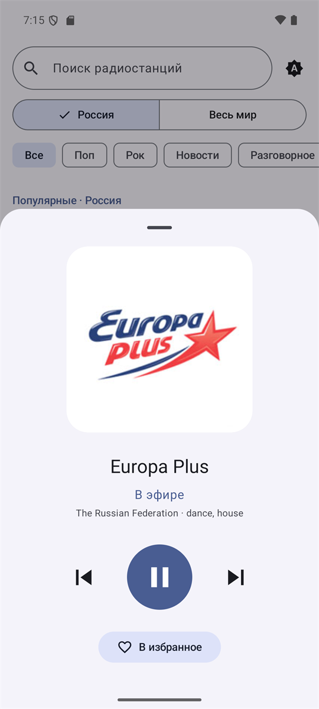
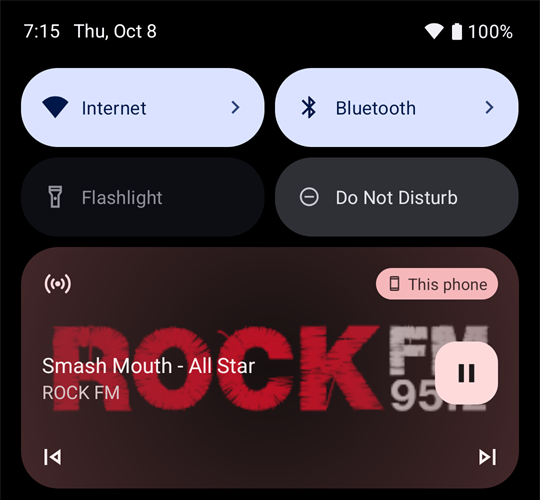

Всё радио мира
в одно касание
All the world's radio
one tap away
RadioJeka — простое интернет-радио для Android. Без регистрации, аккаунтов и лишних экранов: открыл, выбрал станцию, слушаешь. RadioJeka is a simple internet radio app for Android. No sign-up, no accounts, no clutter: open it, pick a station, listen.
- Без регистрацииNo sign-up
- Работает без VPNWorks without a VPN
- Открытый код (MIT)Open source (MIT)
Всё, что нужно для радиоEverything radio needs
Ничего лишнего: только станции, удобный плеер и управление отовсюду — из приложения, уведомления, экрана блокировки и наушников. Nothing extra: just stations, a clean player and controls everywhere — in the app, the notification, the lock screen and your headphones.
Тысячи станцийThousands of stations
Все радиостанции России и самые популярные в мире — переключайтесь между «Россия» и «Весь мир».Every Russian radio station plus the most popular ones worldwide — switch between "Russia" and "World".
Работает без VPNNo VPN needed
Каталог встроен в приложение, поэтому список открывается сразу, даже если сайты каталогов недоступны.The catalog ships inside the app, so the list opens instantly even when catalog websites are blocked.
Быстрый поискQuick search
Ищите по названию с учётом выбранного региона и категории. Поиск работает и офлайн.Search by name within the selected region and genre. Search works offline, too.
ИзбранноеFavorites
Отметьте любимые станции сердечком — они всегда будут наверху списка.Tap the heart on your favorite stations and they always stay at the top.
Что сейчас играетNow playing
Название песни и исполнитель прямо в плеере и уведомлении, если станция их передаёт.Song title and artist right in the player and notification, whenever the station sends them.
Назад и вперёдPrevious & next
Листайте станции кнопками — в приложении, в уведомлении и на наушниках.Flip through stations with buttons — in the app, the notification and on your headphones.
Играет в фонеBackground playback
Управление с экрана блокировки, а при отключении наушников — автоматическая пауза.Control playback from the lock screen; it pauses automatically when headphones are unplugged.
Не обрываетсяAuto-reconnect
Пропала связь в метро или лифте? Приложение само переподключится к эфиру.Lost signal in the subway or an elevator? The app reconnects to the stream on its own.
Светлая и тёмная темаLight & dark theme
Выберите тему или оставьте как в системе. На Android 12+ — цвета Material You под ваши обои.Pick a theme or follow the system. On Android 12+ it uses Material You colors from your wallpaper.

Полноэкранный плеерA full-screen player
Коснитесь мини-плеера внизу — откроется большой плеер с логотипом станции и всем управлением под рукой. Tap the mini player at the bottom to open a large player with the station logo and every control at hand.
- Статус эфира: подключение, в эфире, переподключениеLive status: connecting, on air, reconnecting
- Страна и жанр станции, текущая песняStation country and genre, current song
- Пауза, следующая и предыдущая станцияPause, next and previous station
- Добавление в избранное одной кнопкойAdd to favorites with one button

Управление, не открывая приложениеControl it without opening the app
Радио продолжает играть, когда экран выключен или вы в другом приложении. Переключайте станции из шторки уведомлений, с экрана блокировки или кнопками на наушниках. Radio keeps playing with the screen off or while you're in another app. Switch stations from the notification shade, the lock screen or your headphone buttons.
Как это выглядитSee it in action
Чистый интерфейс в стиле Material 3 — днём и ночью. A clean Material 3 interface — day and night.
Установка за минутуInstall in a minute
Приложение распространяется через GitHub — бесплатно и без магазинов приложений. The app is distributed through GitHub — free, no app store required.
СкачайтеDownload
Скачайте RadioJeka.apk на телефон.Download RadioJeka.apk to your phone.
РазрешитеAllow
Откройте файл. Если Android спросит, разрешите установку из этого источника.Open the file. If Android asks, allow installs from this source.
СлушайтеListen
Нажмите «Установить», откройте приложение и выберите станцию.Tap "Install", open the app and pick a station.
Google Play Защита может предупредить, что приложение ей незнакомо: оно распространяется не через Google Play. Нажмите «Подробнее» → «Всё равно установить». Требуется Android 8.0 или новее. Google Play Protect may warn that it doesn't recognize the app, since it isn't distributed via Google Play. Tap "More details" → "Install anyway". Requires Android 8.0 or newer.
Вопросы и ответыFAQ
Это бесплатно?Is it free?
Да, полностью. Без рекламы, подписок и встроенных покупок. Код открыт под лицензией MIT.Yes, completely. No ads, subscriptions or in-app purchases. The source code is open under the MIT license.
Нужна ли регистрация?Do I need an account?
Нет. Избранное и настройки хранятся только на вашем телефоне.No. Favorites and settings are stored only on your phone.
Откуда берутся станции?Where do the stations come from?
Из открытой базы Radio Browser, которую ведут слушатели со всего мира. Снимок базы встроен в приложение, а когда сайт доступен, приложение раз в сутки обновляет его в фоне.From the open Radio Browser database, maintained by listeners worldwide. A snapshot is built into the app, and when the site is reachable the app refreshes it in the background once a day.
Приложение собирает мои данные?Does the app collect my data?
Нет. Трансляции идут напрямую с серверов радиостанций, приложение ничего не собирает и не отправляет.No. Streams come straight from the stations' servers; the app collects and sends nothing.
Станция не играет или её нет в спискеA station doesn't play or is missing
Её можно исправить или добавить на radio-browser.info — после обновления каталога она появится в RadioJeka. О других проблемах пишите в Issues.You can fix or add it on radio-browser.info and it will appear in RadioJeka after the next catalog update. Report other problems in Issues.
Как обновить приложение?How do I update?
Скачайте новую версию и установите поверх старой — избранное и настройки сохранятся.Download the new version and install it over the old one — your favorites and settings are kept.
На каком языке интерфейс?What language is the interface in?
На русском. Станции со всего мира доступны в разделе «Весь мир».Russian. Stations from around the world are available in the "World" section.
Включите любимое радиоTune in to your favorite radio
Исходный код, релизы и история изменений — на GitHub. Поставьте звезду, если приложение понравилось.Source code, releases and changelog live on GitHub. Leave a star if you like the app.